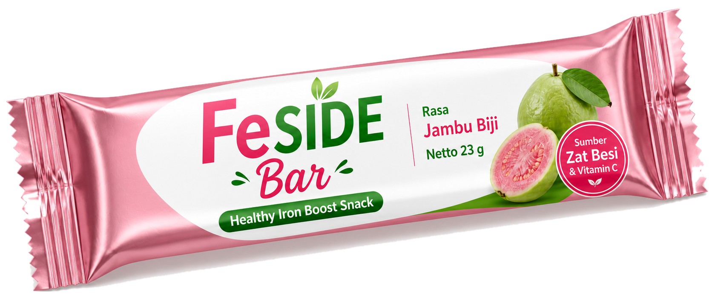
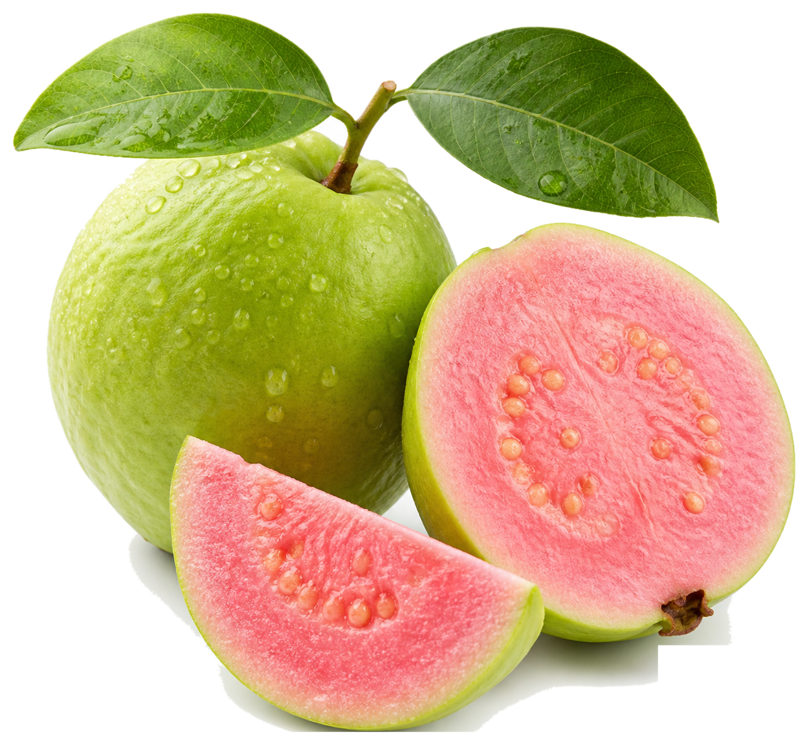
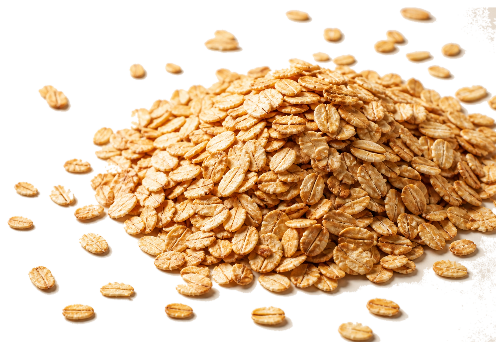
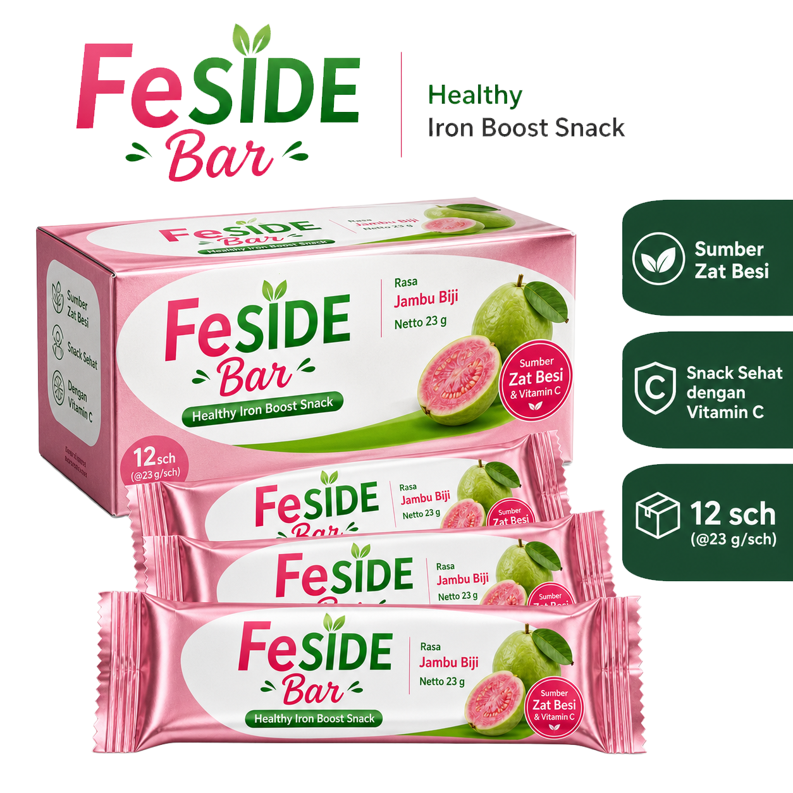
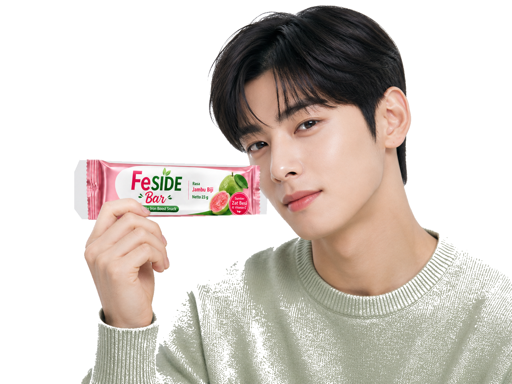

FeSIDE merancang gabungan antara Vitamin C dan Fe agar penyerapan zat besi menjadi lebih optimal, sehingga tubuh mendapatkan dukungan maksimal untuk produksi sel darah merah dan energi harian.
TEMUKAN SNACK SEHAT HARIANMU!
Snack bar rasa jambu biji dengan zat besi dan vitamin C untuk mendukung pemenuhan zat besi harian



Benefit Produk
IRON + VITAMIN C DALAM SATU BAR
Kenapa Zat Besi + Vitamin C?
Pencet atau Hover saya!
KENAPA HARUS FeSide?
Praktis
Format snack bar yang ringkas dan mudah dikonsumsi kapan saja.
Mudah dibawa
Cocok untuk aktivitas sekolah, les, olahraga, dan rutinitas harian.
Memanfaatkan pangan lokal
Komposisi dirancang untuk mendukung penggunaan bahan pangan yang lebih dekat dengan potensi lokal.
Ingredient Story
THE IRON PAIRING CONCEPT
Kami percaya, kebiasaan baik bisa dimulai dari hal kecil termasuk dari snack yang dipilih setiap hari. Karena itu, FeSIDE Bar hadir dengan perpaduan zat besi, vitamin C, kacang merah, oats panggang, dan biji-bijian pilihan. Bukan hanya untuk menciptakan snack bar yang enak, tapi juga untuk menghadirkan pilihan snack yang lebih peduli pada kebutuhan remaja putri.
Jambu biji memberi rasa segar yang mudah disukai, sekaligus menjadi identitas rasa utama FeSIDE Bar. Karakter fruity ini membuat produk tetap terasa seperti snack harian yang ringan, mudah diterima, dan tidak terasa seperti suplemen.

Coba FeSIDE Bar
BATCH UJI PASAR
Gunakan website ini sebagai halaman pre-order atau tester awal. Fokus utamanya adalah mengumpulkan minat, pertanyaan, dan feedback sebelum produksi skala lebih besar.
Tanya via WhatsAppFAQ
PERTANYAAN PENTING
Apakah FeSIDE Bar obat?
Bukan. FeSIDE Bar adalah snack bar pangan fungsional yang dirancang untuk mendukung pemenuhan zat besi harian, bukan obat atau pengganti terapi medis.
Apakah FeSIDE Bar bisa menyembuhkan anemia?
Tidak. FeSIDE Bar tidak diklaim untuk menyembuhkan anemia. Untuk kondisi anemia atau keluhan kesehatan tertentu, konsultasikan dengan tenaga kesehatan.
Siapa target utama FeSIDE Bar?
Target utamanya adalah remaja putri usia 12–18 tahun, khususnya yang aktif di sekolah, les, olahraga, atau kegiatan harian lainnya.
Kenapa memakai rasa jambu biji?
Jambu biji memberi rasa fresh dan relevan dengan positioning vitamin C. Rasa ini juga membuat produk lebih dekat dengan pengalaman snack, bukan suplemen.
BANTU KAMI MENGEMBANGKAN FeSIDE
Coba produknya, beri masukan, dan bantu kami menciptakan snack fungsional yang lebih enak, praktis, dan relevan untuk remaja putri.
Isi Feedback